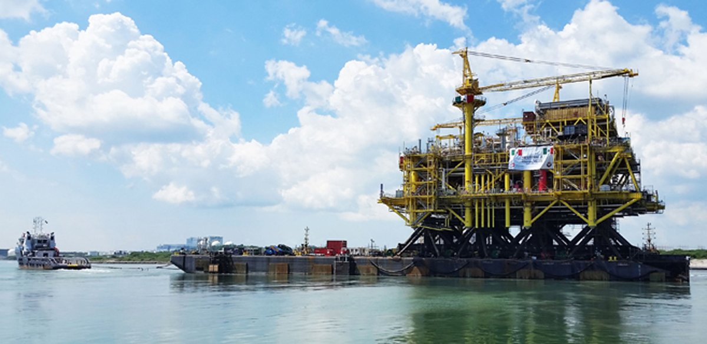

Campeche, situado en el sureste de México, es un estado con una rica historia que abarca desde la civilización maya hasta su consolidación como entidad federativa. En las siguientes líneas, se presenta un recorrido por su evolución histórica y características demográficas.
En la época prehispánica, el territorio que hoy ocupa Campeche fue habitado por la civilización maya, estableciendo importantes ciudades como Edzná, Calakmul y Becán. Estas urbes fueron centros políticos y religiosos destacados en la región. El descubrimiento de Chactún, una ciudad maya del periodo Clásico Tardío (600–900 d.C.), evidencia la riqueza arqueológica de la zona.

Tras la independencia de México en 1821, Campeche formó parte de Yucatán. Sin
embargo, debido a diferencias políticas y económicas, el 29 de abril de
1863, el presidente Benito Juárez decretó la creación del estado de
Campeche como entidad libre y soberana. Durante
el siglo XIX, la economía del estado se basó en la industria y el
comercio marítimo, destacando el cultivo de caña de azúcar y el corte
de palo de tinte, destinado a los centros textiles de Inglaterra y
Francia.
En el siglo XX, el descubrimiento de yacimientos petroleros en la Sonda de Campeche transformó la economía del estado. En 1975 se perforó el primer pozo petrolero marino, llamado Chac número 1, y en 1979 se concluyeron las primeras plataformas marinas fijas. Este auge petrolero provocó un crecimiento significativo en la población, especialmente en Ciudad del Carmen, que se convirtió en el principal centro de operaciones.
Según el Censo de Población y Vivienda 2020, Campeche cuenta con una población de 928,363 habitantes, de los cuales 50.8% son mujeres y 49.2% hombres. Los municipios más poblados son Campeche (294,077 habitantes), Carmen (248,845) y Champotón (78,170).
La población del estado es predominantemente joven, con una pirámide poblacional progresiva que refleja una tasa de natalidad relativamente alta. Aproximadamente el 12% de la población habla alguna lengua indígena, siendo el maya yucateco la más común, seguido por el chol y el tzeltal. Además, existe una comunidad menonita de alrededor de 7,000 personas, principalmente en los municipios de Hopelchén y Hecelchakán.
| MUNICIPIO |
POBLACIÓN |
| CAMPECHE |
294,077 |
| CARMEN |
248,845 |
| CHAMPOTÓN |
78,170 |
| ESCÁRCEGA |
59,923 |
| CALKINÍ |
59,232 |
| CANDELARIA |
46,913 |
| HOPELCHÉN |
42,140 |
| HECELCHAKÁN |
31,917 |
| CALAKMUL |
31,714 |
| TENABO |
11,452 |
| PALIZADA |
8,683 |
| SEYBAPLAYA |
15,297 |
| DZITBALCHÉ |
16,336 |
La economía de Campeche se basa en diversos sectores. La extracción de crudo en la Sonda de Campeche representa aproximadamente el 45.2% del PIB estatal, siendo Ciudad del Carmen el principal centro de operaciones. En la agricultura y ganadería, destacan cultivos como el arroz, la papaya, el mango y la caña de azúcar, así como la cría de ganado bovino y porcino. La actividad pesquera es significativa, con especies como camarón, sierra, róbalo y tiburón. Además, el estado cuenta con atractivos naturales e históricos que permiten al visitante disfrutar de una gran variedad de paisajes y conocer el legado de la cultura maya y de la época colonial.